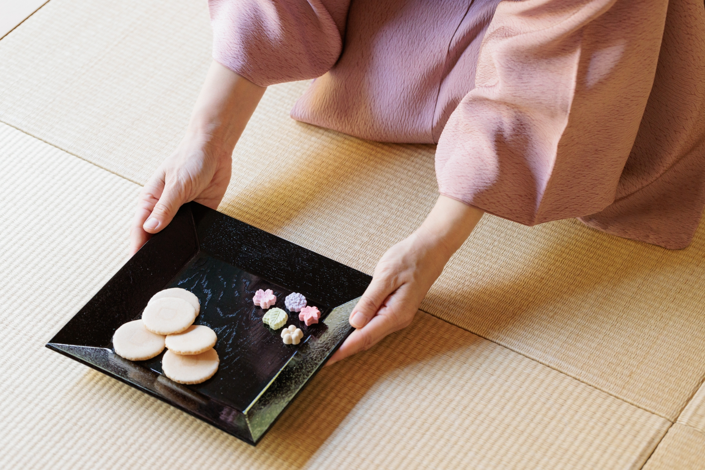

製菓用具
鋼盆、木匙、三角棒、針箸、竹刀、丸棒、擦手巾、瓦斯爐、篩網
品味日式上生和菓子，如賞花般感受季節之美。和菓子精緻包裹四季之味，品味間彷彿穿越時光，每一口都是對季節流轉的敬意，帶您領略日本文化中獨特的時光之美。
影片來源：https://youtu.be/6ss1C0RrDFg?feature=shared鋼盆、木匙、三角棒、針箸、竹刀、丸棒、擦手巾、瓦斯爐、篩網
step 1. 將白豆沙餡與白玉團子拌勻
step 2. 以篩網與木匙將練切過篩
step 3. 以切分的方式將練切降溫
step 4. 加入食用色素調製顏色
step 5. 將紅豆沙餡包入練切
step 6. 塑形與裝飾
以白豆沙餡自製練切
練切調色與塑形
習得和菓子包餡技巧與手法
得到精美上課講義，回家可自行練習